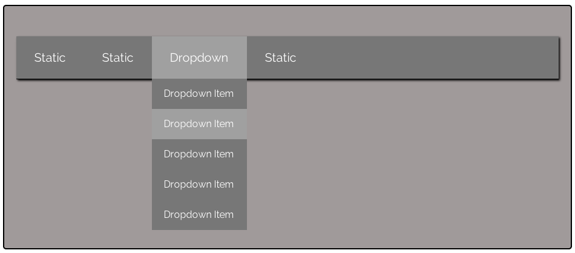

Creating a Dropdown Menu
You should now be pretty familiar with the direct child selector after completing the assignment from the second class as well as building a dropdown menu in today's class. You are going to need to put it to use for this assignment.
In the following example, you will be given the markup for a dropdown menu. You are NOT to change this markup in any way! It will be up to you to generate the CSS to make this dropdown menu work. You will also need to style it as per the mockup (try to get it as close as possible).
Pay particular attention to the class names being used in the markup. Also, you'll need to use the direct child selector in conjunction with absolute positioning to build all of this. For now, do not concern yourself with CSS transitions or any kind of opactiy / z-index. In this example, you are simply to hide or show the dropdown menu on hover.
Though the markup for this dropdown menu is obviously in this index.html file, I have also pastsed the markup below in a code block for reference.
The following is the markup used to generate the nav and dropdown menu:
<div id="example-1" class="wrapper">
<nav>
<ul id="main-nav">
<li>Static</li>
<li>Static</li>
<li class="has-dropdown">Dropdown
<ul class="dropdown">
<li>Dropdown Item</li>
<li>Dropdown Item</li>
<li>Dropdown Item</li>
<li>Dropdown Item</li>
<li>Dropdown Item</li>
</ul>
</li>
<li>Static</li>
</ul>
</nav>
</div>
You will need to provide the CSS from scratch to make this dropdown menu work. Put your CSS styles in the students.css stylesheet. As per the usual, all of your selectors should be nested within the #example-1 wrapper div element. In other words, if you wanted to style a ul element within the nav element, you would need to make sure you targeted this within the #example-1 selector, like this:
#example-1 nav ul {
/* your styles here */
}
Finally, I have already given the main nav and its menu items some default styles. Your job is mainly to make the dropdown menu functional. However, you will also need to style this dropdown menu in the manner per the mockup. You can find the styles I'm using for the main nav and its menu items in the custom.css stylesheet within this assignment's directory.
And now, here is the "broken" nav / dropdown menu.
Example #1
Here is a screenshot of what the nav and dropdown menu should look like after you style them accordingly. In this screenshot, I am hovering over the second item of the dropdown menu. Notice how the background color of the second menu item has changed to match the main nav's hover colors. This clearly indicates which item you're hovering over. (Screenshots from a computer don't include the cursor, but in this case, you should change the cursor to a pointer for any li item you hover over):
MOCKUP TO MATCH
Now it's your turn!
Add your CSS to the students.css file to make this navigation have a functional dropdown menu on the third nav item.
Stuck? Take a gander at the answers.css stylesheet for a detailed walkthrough of everything.